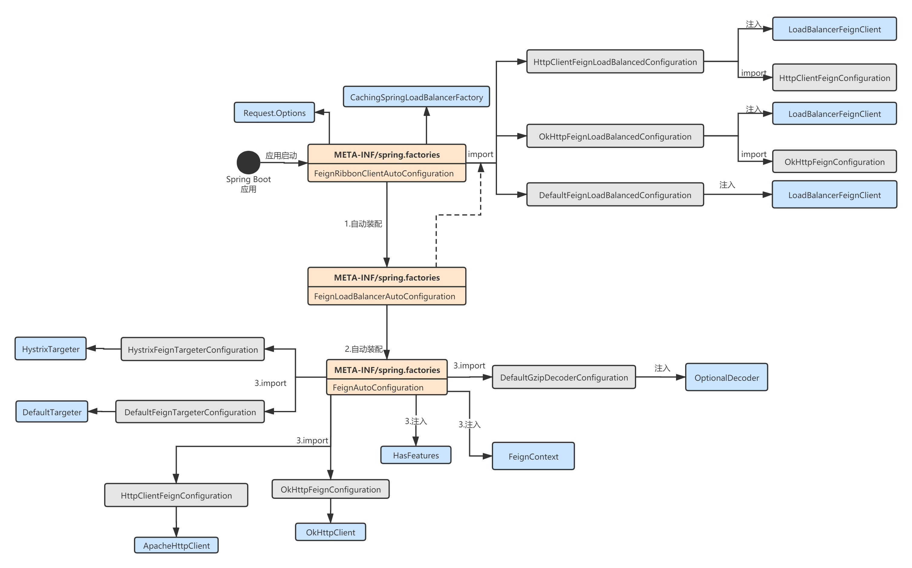
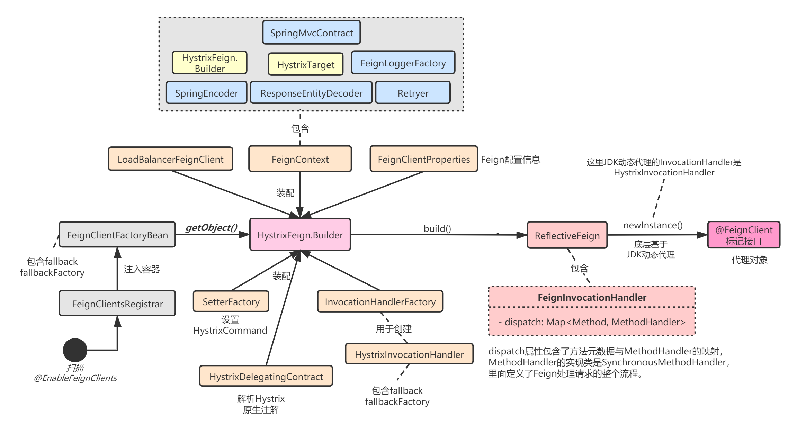

透彻理解Spring Cloud系列（三二）——Hystrix初始化：整合Feign
本章，我将讲解Hystix与Feign组合使用时的初始化流程。通过Feign系列的学习，大家已经知道Feign在自动装配的时候，如果项目中有Hystrix相关的依赖，就会引入两个核心的Hystrix相关组件：
- HystrixTargeter
- HystrixFeign.builder()
下图为Feign的公共组件的默认装配流程：

在使用Feign时，最终就是生成一个动态代理类，那么可以猜想，当引入了Hystrix，这个动态代理类一定是集成了Hystrix的某些组件。
一、初始化流程
我用下面这张图表述集成Hystrix后，Feign的初始化流程：

可以看到，与之前Feign系列中讲解的初始化流程最大区别有以下几点：
- 使用了HystrixFeign.Builder来完成动态代理对象的构建，HystrixFeign.Builder内部封装了很多Hystrix需要的组件，比如SetterFactory.Default用来设置HystrixCommand，默认的groupKey为服务名称，commandKey为接口+方法名称；
- 最终使用JDK动态代理创建代理对象时，使用了
HystrixInvocationHandler，这个InvocationHandler包含了Hystrix的特殊处理逻辑，比如降级。
1.1 HystrixTargeter
@FeignClient注解的接口的动态代理对象是通过FeignClientFactoryBean.getObject()生成的。而FeignClientFactoryBean内部则利用了Targeter组件，当引入Hystrix时，这个组件的具体实现类为HystrixTargeter，代理对象最终通过Targeter.target()生成：
// FeignClientFactoryBean.java
<T> T getTarget() {
FeignContext context = applicationContext.getBean(FeignContext.class);
// 这里获取到的是HystrixFeign.Builder
Feign.Builder builder = feign(context);
//...
// 这里获取到的是HystrixTargeter
Targeter targeter = get(context, Targeter.class);
// 创建代理对象
return (T) targeter.target(this, builder, context,
new HardCodedTarget<>(type, name, url));
}
我们来看下HystrixTargeter的具体实现：
class HystrixTargeter implements Targeter {
@Override
public <T> T target(FeignClientFactoryBean factory, Feign.Builder feign,
FeignContext context, Target.HardCodedTarget<T> target) {
if (!(feign instanceof feign.hystrix.HystrixFeign.Builder)) {
return feign.target(target);
}
feign.hystrix.HystrixFeign.Builder builder = (feign.hystrix.HystrixFeign.Builder) feign;
// name为服务名称
String name = StringUtils.isEmpty(factory.getContextId()) ? factory.getName()
: factory.getContextId();
// HystrixCommand配置工厂
SetterFactory setterFactory = getOptional(name, context, SetterFactory.class);
if (setterFactory != null) {
builder.setterFactory(setterFactory);
}
// fallback是@FeignClient上的注解属性值
Class<?> fallback = factory.getFallback();
if (fallback != void.class) {
return targetWithFallback(name, context, target, builder, fallback);
}
// fallbackFactory是@FeignClient上的注解属性值
Class<?> fallbackFactory = factory.getFallbackFactory();
if (fallbackFactory != void.class) {
return targetWithFallbackFactory(name, context, target, builder,
fallbackFactory);
}
return feign.target(target);
}
}
可以看到，相比默认的DefaultTargeter，就是多了对Fallback和FallbackFactory的处理，它们的内部处理逻辑是类似的，我以fallbackFactory为例讲解下。
1.2 FallbackFactory
FallbackFactory就是降级逻辑的工厂类，可以在@FeignClient注解中配置，比如：
@FeignClient(name = "ServiceA",fallbackFactory = ServiceAClientFallbackFactory.class)
public interface ServiceAClient extends ServiceAInterface {
}
我们来看下HystrixTargeter如何整合FallbackFactory，并创建最终的代理对象的：
// HystrixTargeter.java
private <T> T targetWithFallbackFactory(String feignClientName, FeignContext context,
Target.HardCodedTarget<T> target, HystrixFeign.Builder builder,
Class<?> fallbackFactoryClass) {
// FallbackFactory接口实现类的对象（会被注入到FeignClient自身的ApplicationContext中）
FallbackFactory<? extends T> fallbackFactory = (FallbackFactory<? extends T>) getFromContext(
"fallbackFactory", feignClientName, context, fallbackFactoryClass,
FallbackFactory.class);
// 构建代理对象
return builder.target(target, fallbackFactory);
}
上述代码调用了HystrixFeign.target：
// HystrixFeign.java
public <T> T target(Target<T> target, FallbackFactory<? extends T> fallbackFactory) {
// 这里的target是Target.HardCodedTarget，就是个包装类而已
return build(fallbackFactory).newInstance(target);
}
1.3 HystrixInvocationHandler
我们继续看HystrixFeign.build()：
- 首先设置了一个InvocationHandlerFactory，顾名思义就是用来创建JDK动态代理中的InvocationHandler对象的，可以看到这里的InvocationHandler具体实现是HystrixInvocationHandler；
- 接着，
super.contract(new HystrixDelegatingContract(contract));就是设置一个HystrixDelegatingContract对象，这个Contract是用来解析Hystrix原生的一些注解的，比如@HystrixCommand等；
// HystrixFeign.Builder.java
// 集成Hystrix相关组件
Feign build(final FallbackFactory<?> nullableFallbackFactory) {
// 1.设置一个生成HystrixInvocationHandler的工厂
super.invocationHandlerFactory(new InvocationHandlerFactory() {
@Override
public InvocationHandler create(Target target,
Map<Method, MethodHandler> dispatch) {
return new HystrixInvocationHandler(target, dispatch, setterFactory,
nullableFallbackFactory);
}
});
// 2.设置一个HystrixDelegatingContract对象，解析Hystrix原生注解
super.contract(new HystrixDelegatingContract(contract));
// 3.调用HystrixFeign.Builder完成构建
return super.build();
}
HystrixInvocationHandler是需要我们重点关注的，后面实际执行代理对象的方法时，会触发这个类的方法的执行。可以看到，它包含了Hystrix的降级组件：
// HystrixInvocationHandler.java
final class HystrixInvocationHandler implements InvocationHandler {
private final Target<?> target;
private final Map<Method, MethodHandler> dispatch;
private final FallbackFactory<?> fallbackFactory; // Nullable
private final Map<Method, Method> fallbackMethodMap;
private final Map<Method, Setter> setterMethodMap;
HystrixInvocationHandler(Target<?> target, Map<Method, MethodHandler> dispatch,
SetterFactory setterFactory, FallbackFactory<?> fallbackFactory) {
this.target = checkNotNull(target, "target");
this.dispatch = checkNotNull(dispatch, "dispatch");
this.fallbackFactory = fallbackFactory;
this.fallbackMethodMap = toFallbackMethod(dispatch);
this.setterMethodMap = toSetters(setterFactory, target, dispatch.keySet());
}
//...
}
我们再来看下父类的构建，就是创建一个ReflectiveFeign，后面的流程就完全和Feign一样了：
// Feign.Builder
public Feign build() {
Client client = Capability.enrich(this.client, capabilities);
Retryer retryer = Capability.enrich(this.retryer, capabilities);
List<RequestInterceptor> requestInterceptors = this.requestInterceptors.stream()
.map(ri -> Capability.enrich(ri, capabilities))
.collect(Collectors.toList());
Logger logger = Capability.enrich(this.logger, capabilities);
Contract contract = Capability.enrich(this.contract, capabilities);
Options options = Capability.enrich(this.options, capabilities);
Encoder encoder = Capability.enrich(this.encoder, capabilities);
Decoder decoder = Capability.enrich(this.decoder, capabilities);
InvocationHandlerFactory invocationHandlerFactory =
Capability.enrich(this.invocationHandlerFactory, capabilities);
QueryMapEncoder queryMapEncoder = Capability.enrich(this.queryMapEncoder, capabilities);
SynchronousMethodHandler.Factory synchronousMethodHandlerFactory =
new SynchronousMethodHandler.Factory(client, retryer, requestInterceptors, logger,
logLevel, decode404, closeAfterDecode, propagationPolicy, forceDecoding);
ParseHandlersByName handlersByName =
new ParseHandlersByName(contract, options, encoder, decoder, queryMapEncoder,
errorDecoder, synchronousMethodHandlerFactory);
return new ReflectiveFeign(handlersByName, invocationHandlerFactory, queryMapEncoder);
}
二、HystrixInvocationHandler分析
默认情况下，Feign生成的InvocationHandler是ReflectiveFeign.FeignInvocationHandler，但是当使用了Hystrix以后，则是HystrixInvocationHandler，也就是说，当我调用代理对象的接口方法时，都会触发HystrixInvocationHandler.invoke()的执行：

2.1 构建
我们先来回顾下通过JDK动态代理创建代理对象时，是如何构建HystrixInvocationHandler的：
final class HystrixInvocationHandler implements InvocationHandler {
private final Target<?> target;
private final Map<Method, MethodHandler> dispatch;
private final FallbackFactory<?> fallbackFactory; // Nullable
private final Map<Method, Method> fallbackMethodMap;
private final Map<Method, Setter> setterMethodMap;
HystrixInvocationHandler(Target<?> target, Map<Method, MethodHandler> dispatch,
SetterFactory setterFactory, FallbackFactory<?> fallbackFactory) {
this.target = checkNotNull(target, "target");
this.dispatch = checkNotNull(dispatch, "dispatch");
this.fallbackFactory = fallbackFactory;
this.fallbackMethodMap = toFallbackMethod(dispatch);
this.setterMethodMap = toSetters(setterFactory, target, dispatch.keySet());
}
}
构造器中就是一些属性设置，关键注意toFallbackMethod和toSetters这两个方法。
首先看toFallbackMethod，这块代码就是遍历dispatch（里面包含了<方法元数据,MethodHandler>，MethodHandler的实现类是SynchronousMethodHandler，里面包含了Feign的处理流程），将Key存放到一个Map中：
// HystrixInvocationHandler.java
static Map<Method, Method> toFallbackMethod(Map<Method, MethodHandler> dispatch) {
Map<Method, Method> result = new LinkedHashMap<Method, Method>();
for (Method method : dispatch.keySet()) {
method.setAccessible(true);
// key为方法
result.put(method, method);
}
return result;
}
再来看toSetters方法，也是生成一个Map，key是方法元数据，value是一个HystrixCommand.Setter对象，它的核心作用是设置HystrixCommand的分组：
// HystrixInvocationHandler.java
static Map<Method, Setter> toSetters(SetterFactory setterFactory, Target<?> target, Set<Method> methods) {
Map<Method, Setter> result = new LinkedHashMap<Method, Setter>();
for (Method method : methods) {
method.setAccessible(true);
result.put(method, setterFactory.create(target, method));
}
return result;
}
HystrixCommand.Setter：
// SetterFactory.java
public interface SetterFactory {
HystrixCommand.Setter create(Target<?> target, Method method);
final class Default implements SetterFactory {
@Override
public HystrixCommand.Setter create(Target<?> target, Method method) {
// 服务名称
String groupKey = target.name();
// @FeignClient标记的接口类+方法组合成一个字符串，比如 ServiceAClient#sayHello(String)
String commandKey = Feign.configKey(target.type(), method);
// 这是Hystrix原生的使用
return HystrixCommand.Setter
.withGroupKey(HystrixCommandGroupKey.Factory.asKey(groupKey))
.andCommandKey(HystrixCommandKey.Factory.asKey(commandKey));
}
}
}
关于groupKey和commandKey，不熟悉的童鞋可以去看我写的《分布式系统从理论到实战系列》。
2.2 执行
接着来看HystrixInvocationHandler的执行，本质就是生成一个HystrixCommand对象，然后将Feign的调用逻辑封装到它内部，最后调用它：
// HystrixInvocationHandler.java
@Override
public Object invoke(final Object proxy, final Method method, final Object[] args) throws Throwable {
// 1.如果是调用的Object类的方法，直接返回
if ("equals".equals(method.getName())) {
try {
Object otherHandler =
args.length > 0 && args[0] != null ? Proxy.getInvocationHandler(args[0]) : null;
return equals(otherHandler);
} catch (IllegalArgumentException e) {
return false;
}
} else if ("hashCode".equals(method.getName())) {
return hashCode();
} else if ("toString".equals(method.getName())) {
return toString();
}
// 2.创建一个HystrixCommand对象
HystrixCommand<Object> hystrixCommand =
new HystrixCommand<Object>(setterMethodMap.get(method)) {
@Override
protected Object run() throws Exception {
try {
// 关键：根据Method元数据，从dispatch找到SynchronousMethodHandler，然后执行
return HystrixInvocationHandler.this.dispatch.get(method).invoke(args);
} catch (Exception e) {
throw e;
} catch (Throwable t) {
throw (Error) t;
}
}
// 降级逻辑
@Override
protected Object getFallback() {
if (fallbackFactory == null) {
// 没有做降级处理，直接抛出异常
return super.getFallback();
}
try {
// getExecutionException()用于解析异常，返回的fallback就是降级对象
Object fallback = fallbackFactory.create(getExecutionException());
// 执行降级逻辑
Object result = fallbackMethodMap.get(method).invoke(fallback, args);
// 根据方法返回类型作不同处理
if (isReturnsHystrixCommand(method)) {
return ((HystrixCommand) result).execute();
} else if (isReturnsObservable(method)) {
// Create a cold Observable
return ((Observable) result).toBlocking().first();
} else if (isReturnsSingle(method)) {
// Create a cold Observable as a Single
return ((Single) result).toObservable().toBlocking().first();
} else if (isReturnsCompletable(method)) {
((Completable) result).await();
return null;
} else if (isReturnsCompletableFuture(method)) {
return ((Future) result).get();
} else {
return result;
}
} catch (IllegalAccessException e) {
// shouldn't happen as method is public due to being an interface
throw new AssertionError(e);
} catch (InvocationTargetException | ExecutionException e) {
// Exceptions on fallback are tossed by Hystrix
throw new AssertionError(e.getCause());
} catch (InterruptedException e) {
// Exceptions on fallback are tossed by Hystrix
Thread.currentThread().interrupt();
throw new AssertionError(e.getCause());
}
}
};
// 根据方法返回类型的不同，对command执行不同调用操作
if (Util.isDefault(method)) {
return hystrixCommand.execute();
} else if (isReturnsHystrixCommand(method)) {
return hystrixCommand;
} else if (isReturnsObservable(method)) {
// Create a cold Observable
return hystrixCommand.toObservable();
} else if (isReturnsSingle(method)) {
// Create a cold Observable as a Single
return hystrixCommand.toObservable().toSingle();
} else if (isReturnsCompletable(method)) {
return hystrixCommand.toObservable().toCompletable();
} else if (isReturnsCompletableFuture(method)) {
return new ObservableCompletableFuture<>(hystrixCommand);
}
return hystrixCommand.execute();
}
注意：由于Hystrix本身的源码大量使用了RxJava这个响应式编程框架，所以可读性非常差，我后续对其源码的分析只专注于HystrixCommand.execute()这个同步方法执行的逻辑。
三、总结
本章，我针对Hystrix整合Feign时，动态代理对象的构建流程进行了讲解。Spring Cloud支持通过@HystrixCommand使用原生的Hystrix，也支持在Feign中使用Hystrix。我在本章讲解的主要是后者（核心原理都是一样的，后面章节会讲到）。
Feign结合Hystrix一起使用时，核心思路就是针对Hystrix引入一些Feign的特殊组件，然后在最终构建代理对象时，创建一个HystrixInvocationHandler，里面包含了Hystrix的处理逻辑，这样就可以透明的将Hystrix的熔断、降级、资源隔离等功能引入到声明式方法调用中了。